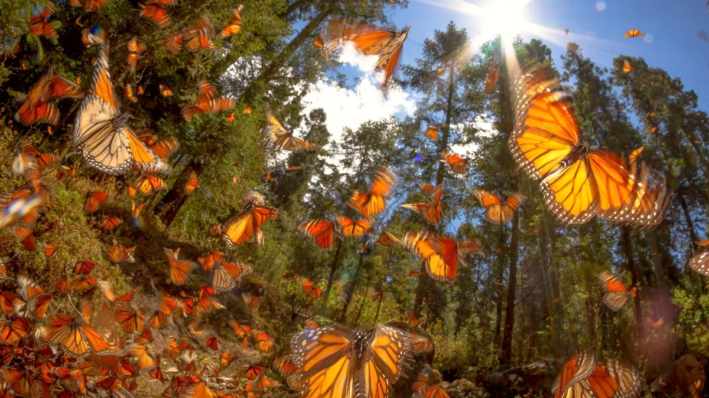

Las mariposas monarca son conocidas por su migración anual desde Canadá y Estados Unidos hasta México. Con colores brillantes y patrones únicos, estas mariposas son un espectáculo de la naturaleza. A pesar de enfrentar desafíos como la pérdida de hábitat y el cambio climático, los esfuerzos de conservación están ayudando a proteger su población. Las mariposas monarca son un recordatorio de la belleza y fragilidad de la naturaleza.
